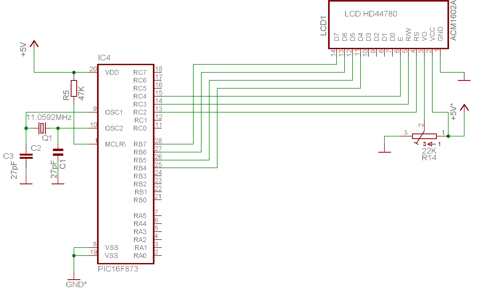

AFFICHEUR LCD EN MODE 4 BITS

L'avantage essentiel du mode 4 bits est de ne nécessiter que 7 lignes de port au lieu de 11 en mode 8 bits. Le programme utilise les 4 bits de poids fort du port B et les lignes RC2-4 du port C. Il est facile de modifier le programme afin d'utiliser d'autres lignes de port pour la commande de l'afficheur (E, RS et R/W). En revanche, si vous souhaitez utiliser les bits de poids faible d'un port, il vous faudra modifier les déclarations et les fonctions init_lcd et lcd_write. Il est possible de gagner encore une ligne, en forcant la ligne de commande R/W de l'afficheur à 1. Bien entendu, le programme doit être modifié puisque la lecture du bit Busy est alors impossible et des temporisations d'une longueur appropriée doivent être ajoutées.
Ce programme est facililement adaptable au 8051 et à ses dérivés.
Pour utiliser ces fonctions, incorporez à votre programme ces quelques lignes ou compilez le fichier .obj obtenu et ajouter à votre programme: #include "lcd_8.h". Votre fonction "main" doit appeler la fonction "init_lcd()" avant d'écrire dans l'afficheur LCD.
Les temporisations (delay.c) sont incluses dans les programmes à télécharger. XTAL_FREQ (dans delay.c) ajuste la fréquence du quartz.
Programme
/*
* Routines LCD en mode donnees 4 bits 2x16 caractères
*
* Claude Dreschel <Claudedel@wanadoo.fr>
* controleur LCD Hitachi HD44780
*
*/
#include <pic1687x.h>
#include "delay.h"static bit LCD_RS @ ((unsigned)&PORTC*8+2); // Register Select
static bit LCD_RW @ ((unsigned)&PORTC*8+3); // Read/Write LCD
static bit LCD_EN @ ((unsigned)&PORTC*8+4); // LCD Enable
static bit FLAG_BUSY @ ((unsigned)&PORTB*8+7);#define PORT_DATA PORTB
#define TRIS_DATA TRISB
#define NOP asm("nop")
#define LCD_STROBE LCD_EN = 1;NOP;NOP;LCD_EN = 0
#define PORTB_IN 0xFF
#define PORTB_OUT 0x0F
#define INIT_PORTC TRISC=0b11000111 //PortC Config/* initialise l'afficheur LCD en mode 4 bits */
void init_lcd(void)
{
INIT_TRISC;
TRIS_DATA = PORTB_OUT;
LCD_RS = 0; // registre de controle
LCD_EN = 0;
LCD_RW = 0; // ecriture
DelayMs(25); // Attente power on
PORT_DATA = (PORT_DATA & 0x0F) | (0x30);
LCD_STROBE;
DelayMs(5);
LCD_STROBE;
Delay100Us();
LCD_STROBE;
DelayMs(5);
PORT_DATA = (PORT_DATA & 0x0F) | (0x20);
LCD_STROBE;
DelayMs(1);
lcd_write_instr(0x28); // Mode 4 bit, 2/16, font 5x7
lcd_write_instr(0x08); // affichage off
lcd_write_instr(0x01); // clear et home
lcd_write_instr(0x0C); // Affichage on, curseur clign off
lcd_write_instr(0x06); // pas de decalage
}// Test le bit BF jusqu'a ce que le LCD soit ok
void lcd_busy(void)
{
static bit LCD_BF;
TRIS_DATA = PORTB_IN;
LCD_RS = 0; // selectionne registre
LCD_RW = 1; // en lecture
do
{
LCD_EN=1;
NOP;
LCD_BF=FLAG_BUSY;
LCD_EN=0;
NOP;
LCD_STROBE; // lecture deuxieme demi-octet
}while(LCD_BF); // tant que BF=1
LCD_RW=0;
TRIS_DATA=PORTB_OUT; // data en sortie
}
// Ecriture d'un octet dans le LCD en mode 4 bitsvoid lcd_write(unsigned char c)
{
PORT_DATA = (PORT_DATA & 0x0F) | (c);
LCD_STROBE;
PORT_DATA = (PORT_DATA & 0x0F) | (c << 4);
LCD_STROBE;}
// Ecrit une instruction dans LCD
void lcd_write_instr(unsigned char c)
{
lcd_busy();
LCD_RS = 0; // selectionne registre
lcd_write(c);
}// Ecriture d'un caractere
void lcd_putch(unsigned char c)
{
lcd_busy();
LCD_RS = 1;
lcd_write(c);
}
// Ecriture d'une chaine de caracteresvoid lcd_puts(const unsigned char * s)
{
while(*s)
lcd_putch(*s++);
}
// Positionne le curseur ligne, position
// la premiere ligne est la ligne 0void lcd_pos(unsigned char ligne,unsigned char pos)
{
lcd_write_instr(((ligne * 0x40)+pos)+0x80);
}
// Efface l'ecran et curseur home
void lcd_clear(void)
{
lcd_write_instr(0x1);
}
// Curseur Home
void lcd_home(void)
{
lcd_write_instr(0x02);
}// Fait clignoter le caractere affiche
void lcd_clign_on(void)
{
lcd_write_instr(0x0D);
}// Arrete le clignotement
void lcd_clign_off(void)
{
lcd_write_instr(0x0C);
}// decalage a gauche
void lcd_decal_gauche(void)
{
lcd_write_instr(0x4);
}// decalage a droite
void lcd_decal_droite(void)
{
lcd_write_instr(0x6);
}